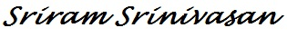

This Week in Mobile - Tech Edition
14 February, 2014
Welcome to the first edition of the weekly magazine "This week in Mobile" also can be called as "TWIM". We are in an exciting phase of mobile first push, where web development means making sure the website works across the devices. When it comes to native application development, Android, iOS are ruling the roost. That being said, our magazine's focus will be in bringing quality content related to mobile web, hybrid and android based native application development.
There are loads of exciting stuff going on and tons to learn to keep up, with your wishes (hope you will) the first step has been taken. Keep learning, and at the same time do write to me back, your comments and ideas.
Web development has come a long way from pure HTML to serverside scripting to plethora of languages, servers and tools. But with the mobile first dominance, static web development is back in action. This is an intresting read
A 8 week project resulted in "Peer Server" that turns your browserinto a webserver. Unline typical HTTP Server/Client, here the data moves using WebRTC data channel.
A call to understand and utilise WebRTC as it's time has come
An excellent introduction to WebGL